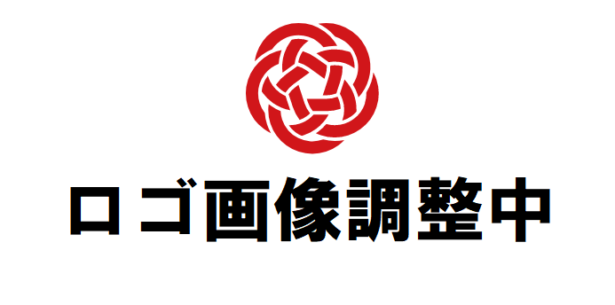

| 2022- 6-12 | LODチャレンジ2022の作品募集を開始しました！ |
|---|---|
| 2022- 3-17 | (開催報告)LODチャレンジ2022 オンライン授賞式シンポジウム |
| 2022- 3-13 | (主催)LODチャレンジ2022 オンライン授賞式シンポジウム |
| 2022- 2-14 | 【プレスリリース】Linked Open Data チャレンジ Japan 2021 受賞作品発表 |
| 2021-11-15 | (主催)SPARQLエンドポイントの使い方・作り方 |
| 2021-11-11 | 11/1に開催した「LODチャレンジ作品温故知新」の過去の応募作品の紹介資料を公開しました。 イベントのアーカイブも公開しています。 |
| 2021-11-1 | (主催)LODチャレンジ作品温故知新＆応募相談会 |